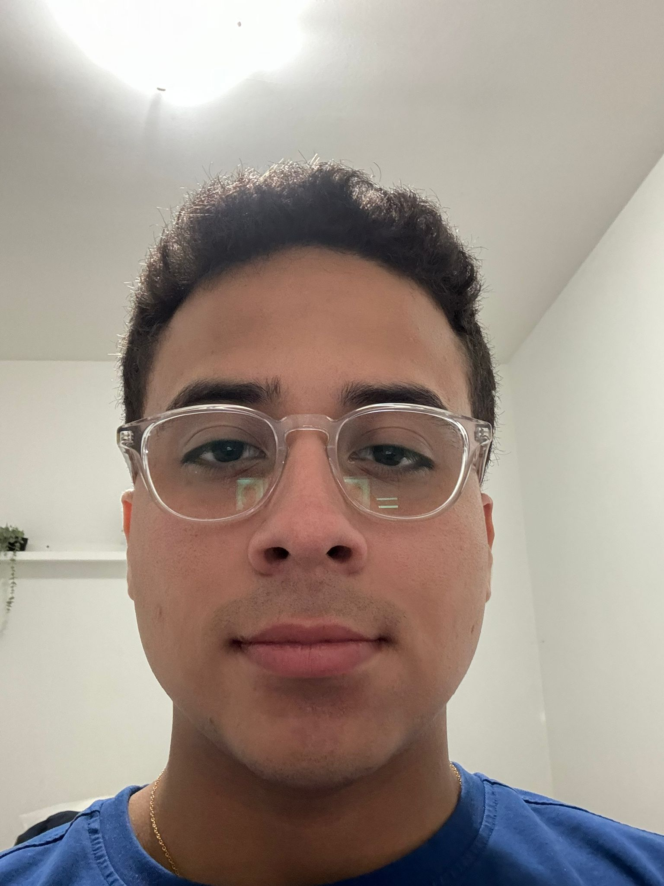

Hello, I'm Jeremy Mogro

Welcome to my Cultural Connections Page!
Cultural Description
Top Two Cultural Shocks in Vancouver:
- 1. Vancouver have a large amount of people for all around the world
- 2. The security of Vancouver it's very amazing
Top Two Things I Miss Most from Ecuador:
- 1. My family is a very key part from my life that's why it's the thing the I miss the most.
- 2. One important thing that miss from Ecuador is the amazing food we have, but I miss more the typical food call " Bolon mixto".
Amazing New Things I Love About Vancouver/Canada:
- 1. The first thing that make's me love this city is the variety of food you can find on the street, basically from every country of the world.
- 2. Climate is something that impress me a lot about Vancouver, special the autumn, every part of the city turn's beautiful
Personal gol in Vancouver:
- 1. The first thing that make's me love this city is the variety of food you can find on the street, basically from every country of the world.
- 2. Climate is something that impress me a lot about Vancouver, special the autumn, every part of the city turn's beautiful